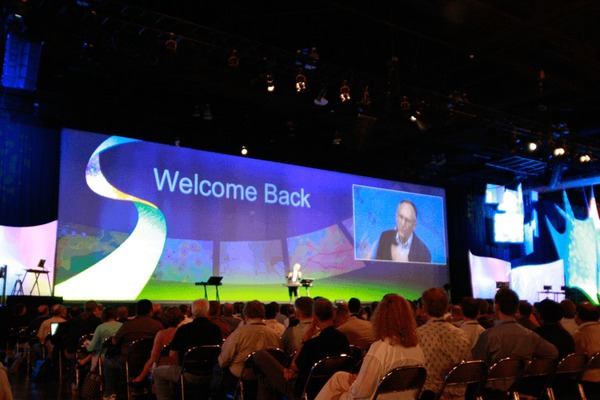

History
TechCon began in 2010 as a small, regional technology conference aimed at bringing together local tech enthusiasts and professionals. Founded by a group of technology innovators and industry leaders, the initial goal was to foster collaboration and share knowledge on emerging technologies. The first event was held in a modest conference center with just 50 attendees and a handful of speakers
